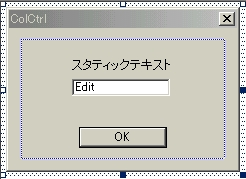
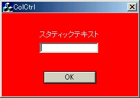
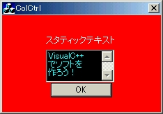
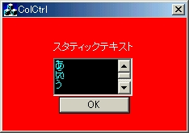
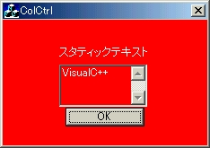
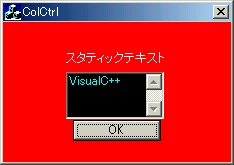

←Back［スタティックコントロール］ -- Up［コントロールの背景色を変更する］ -- Forward［ボタンコントロール（1） ］→
エディットコントロール（エディットボックス）とは，ユーザに何か入力させたり，ユーザに何か提示させるための四角いボックスである．このコントロールの描画色を変更させることは，少し複雑であるが，要所をおさえると実は簡単なのである．
| ●エディットボックスの背景色を変更する |
スタティックテキストの「色」が２つあったように，このオブジェクトも，文字列が表示されるオブジェクトのため３つの「色」が存在する．
- テキスト自体の色
- テキストが書かれている部分のテキストの背景(バウンディングボックス)色
- テキストが書かれていない部分のエディットボックスの内部の色
スタティックテキストと同様，１と２の色はそれぞれ
を使えばよいが，3の色の変更は，ダイアログの場合と同様ブラシハンドルを返すことで実現できる．エディットボックスは，そのスタイル(単一行，複数行，読取専用または無効状態)によって動作が異なる．ここではそれぞれの場合を分けて説明していく．その前にリソースを編集しておこう．
Dialogの中のIDD_COLCTRL_DIALOGをダブルクリックで開く． 
figure3.5 リソース編集 figure3.6 実行結果
エディットボックスの背景色の変更は，実は非常に簡単である．なぜならエディットボックスに書かれるものがテキストであるという点では，スタティックテキストの背景色の変更と同じ手続きをするだけでよいからである．しかも，我々はすでにスタティックテキストの（背景）色の変更を学んだ．なおかつエディットボックスが単一行スタイルであれば，さらに悩むことはない．以下のコーディングを行えば実現は容易にできる．
まずは，メンバ変数を追加する．追加するメンバ変数は，エディットボックスの背景色となるブラシと，エディットボックスのテキスト色である．
ColCtrlDlg.cpp内のOnInitDialog関数で，さきほど追加したメンバ変数のカラーを作る．いままでのコーディングを見やすくするためには，以下のように編集しておくとことをお勧めする．ここではエディットボックスの背景色（テキストが書かれていない部分）を黒，テキストを水色にしている．
OnCtlColor関数を以下のように修正する．
やろうとしていることは非常に単純で，エディットボックスであれば，
pDC->SetBkMode(TRANSPARENT);
テキストが書かれる部分の背景は透過色にする
pDC->SetTextColor(m_colEditText);
テキストカラーを決める
return (HBRUSH) m_brEdit;
テキストが書かれない背景色を決定する（返す）としているだけである．スタティックコントロールの場合と比べれば，きちんと指定した背景ブラシを返すだけの違いであることは容易にわかるであろう．
少し疑問に思えるのは，nCtlColorを分岐させるときに，ただCTLCOLOR_EDITの場合として分岐するのではなくて，CTLCOLOR_MSGBOXも付加させている点である（つまりnCtlColorが，CTLCOLOR_EDITかCTLCOLOR_MSGBOXであれば実行されるということ）．これはMSDNにそうせよと書いてあるからそうしているのであるが，実際にはCTLCOLOR_MSGBOXを不可させる必要は特にない※1．
エディットボックスの背景色の変更の一番厄介なところは，複数行にまたがる時である．はじめに厄介さを勉強してもらい，失敗しない複数行エディットボックスの背景色の変更を勉強していくことにする．まず複数行エディットボックスをつくらなくてはならない．
Dialogの中のIDD_COLCTRL_DIALOGをダブルクリックで開く．
［チェックする項目］
・複数行
・垂直スクロールバー
・改行を許可
［チェックをはずす項目］
・水平オートスクロール
（実際に打ち込んで動作するか見てみよう．） 
figure3.7 うまく動作している気がする figure3.8 表示がおかしくなる例背景も黒に変更されているし，テキストも水色になっているから，一見うまく動作しているように見える．では記述した文字列を削除してみよう．deleteキーやbackspaceキーで削除したつもりなのに消えていないという状況が起こるかもしれない．また長い文を打ち込んでスクロールしてみよう．たちまち表示がおかしくなる（figure3.8は，”あいうえお”と1行づつ打ち込んでスクロールした結果，スクロールしたら文字が重なってしまった）だろう．どうやら単一行エディットボックスでは起きなかった問題が生じている．この原因はなんだろうか？もちろん!? MSDNにも複数行エディットボックスについてなにも言及されていないから困ったものである．
てっとり早くいうと，「複数行エディットコントロールでは，背景モードをTRANSPARENTに設定することができない」ということである．これは，コーディング上ではエラーがでることはないが，「新しいテキストを入力したり，スクロールしたりするときに，古いテキストが消去されない」ため，事実上背景モードをTRANSPARENTに設定することができないということである．この現象は，単一行エディットボックスでは起きない．
解決策としては，背景モードをOPAQUE（塗りつぶし）に設定し，テキストが書かれている部分の背景色を設定してあげればよい．つまり
と設定し直そう．するとうまく動作するはずである．
したがって単一行エディットボックスの時でも背景モードをTRANSPARENT（透過）に設定せず，背景モードをOPAQUEに設定し，テキスト背景色を指定してあげた方が，複数行に移行する際には都合がよい．だったらはじめからそのように解説したらよいのでは？と言われるかもしれないが，背景モードをTRANSPARENTにする際の注意点をあえて述べたいためにこのような回り道をした．
ここでは，読み取り専用エディットボックスの背景色の変更について解説していく．読取専用エディットボックスの背景色の変更は，単一行・複数行のエディットボックスの背景色の変更とは大きく異なる．なぜなら，文字列を変更することができないという点では，エディットボックスというよりもスタティックテキストに近いからである．まず現在配置されているエディットボックスのプロパティを開き，リソース名を確認しほしい．これがIDC_EDIT1（ディフォルト）になっていたらいいのであるが，なっていない場合はIDC_EDIT1に直してほしい．以下はエディットボックスがIDC_EDIT1であるとして話をすすめていく．単一行・複数行エディットボックスの違いは特に意識しなくてもいいが，ここでは現在の複数行エディットボックスのままにしておく．
ここでも，単一行・複数行と同様に，背景が黒でテキストが水色の読取専用エディットボックスを作ることを目標にしていこう．まず、OnOnInitDialogの中で，「背景色の設定」部分の下に，以下のようなコードを追加する．
CEdit* pEdit = (CEdit*)GetDlgItem(IDC_EDIT1);
CWnd::GetDlgItemは、ダイアログ ボックスまたは他のウィンドウ内の指定されたコントロールまたは子ウィンドウへのポインタを返す．返されたポインタは、CWnd*であるため，実際に使用する際には，コントロールの型へキャストして使用する必要がある．
この操作でエディットコントロール：IDC_EDIT1を操作するためのポインタpEditを得ることができる．
pEdit->SetWindowText(_T("VisualC++"));
CWnd::SetWindowTextは、ウィンドウの文字列を設定する関数である．エディットボックスのポインタを使ってこのメンバ関数を実行すると，エディットボックスに文字列を表示することができる．
pEdit->SetReadOnly(true);
エディットコントロールを読取専用エディットコントロールに変えることができる．エディットコントロールを読取専用に設定し，初期文字列を設定した．それでは正しく描画色が変更できたか確かめるために実行してみたのがfigure3.9である．OnCtlColor関数に関しては一切触れていないはずなので，本来なら描画色は変更されているはずなのだが，うまく変更されてないことに気づいただろうか？

figure 3.9 失敗している！一旦整理してみよう．今回のエディットボックスとスタティックコントロールの描画色を比較してみると以下の表のようになる．目標は真ん中の行のエディットボックスの結果であるのだが，今回の失敗作は一番下の行である．ここで重要なことに気がつく．どうやらスタティックコントロールの結果と同じになっているのではないか！
ケース エディットコントロール スタティックコントロール 通常の場合 VisualC++ -
期待しているもの VisualC++ -
今回の失敗作 VisualC++ スタティックテキスト 以上からわかるとおり，読取専用のエディットコントロールは，文字列の変更が許されていないという点では，スタティックコントロールと等価と考えてよいということである．したがって，読取専用のエディットコントロールが，ダイアログのOnCtlColor関数を呼び出す時，引数であるnCtlColorにはCTLCOLOR_STATICが格納されているのである．したがって先ほどまでのOnCtlColor関数のコーディングのままでは，読取専用のエディットボックスに関しては，CTLCOLOR_STATIC以下のステートメントが実行されてしまっていたのである．
というわけでOnCtlColor関数を以下のように変更してほしい．
読取専用エディットコントロールは，nCtlColorにCTLCOLOR_STATICが格納されているので，通常のスタティックコントロールのコーディングとかぶってしまう．そこで第2引数を使用することで，この関数を呼び出したコントロールが，通常のスタティックコントロールなのか，読取専用エディットコントロールかを判定しているのが上のコーディングである．pWnd->GetDlgCtrlID(void)で，ウィンドウやダイアログの子ウィンドウまたはコントロールのID値を返すことができる．この値がIDC_EDIT1であれば，それは呼び出したコントロールが読取専用エディットコントロールであることになるのは容易にわかるだろう．さて実行してみよう．

figure3.10 実行結果これでエディットコントロールの描画色の変更が自由自在に！？なっただろう！
※1 そもそも，我々は自作のアプリケーションにおいて，CTLCOLOR_MSGBOXが送られたことを検出できないからである（つまるところバグである）．この問題に対してはMicrosoftも気づいているようで，MSDNやオフィシャルホームページのサポート技術情報（Knowledge Base）：Q99808に解決策？らしきサンプル が掲載されているようである．
←Back［スタティックコントロール］ -- Up［コントロールの背景色を変更する］ -- Forward［ボタンコントロール（1）］→
VisualC++でソフトを作ろう (c) 藤門千明